The local Poisson background, narrow and broad peaks, the role of the input, and reproducibility between replicates (IDR)
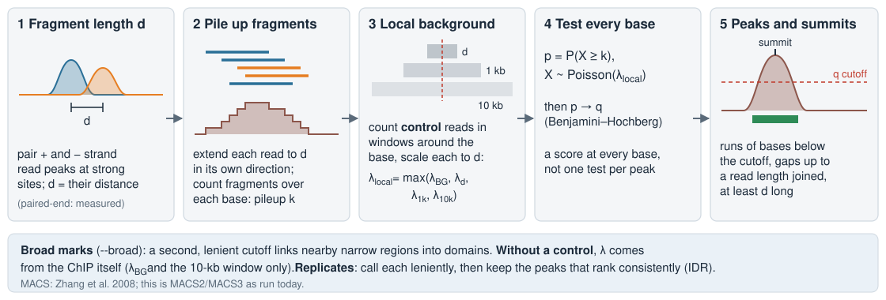
--broad help.| sample | paired + / − strand peaks | predicted d | alternatives |
|---|---|---|---|
| CTCF replicate 1 (36 bp reads) | 359 | 100 bp | 100 |
| CTCF replicate 2 | – | 109 bp | – |
| H3K36me3 (51 bp reads) | 305 | 246 bp | 17 values from 24 to 595 bp |
--nomodel --extsize 200) or use paired-end reads (-f BAMPE).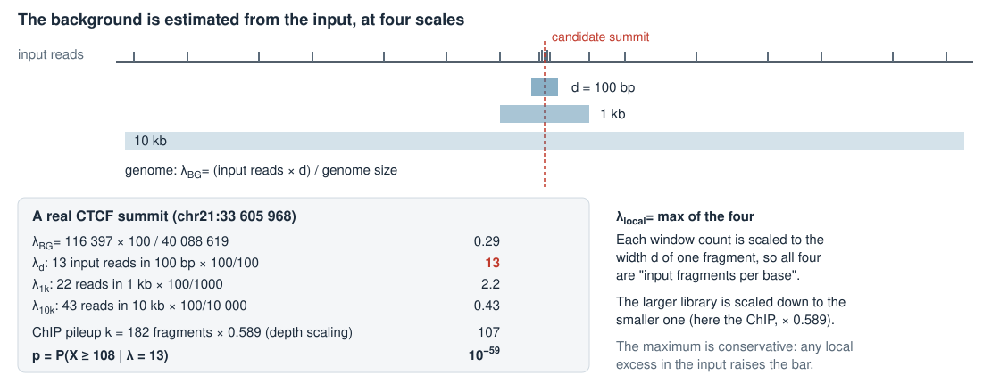
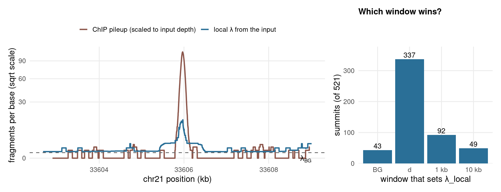
A candidate summit has pileup k = 25 (after depth scaling). From the input: \lambda_\text{BG} = 0.3, \lambda_d = 2, \lambda_\text{1k} = 4.5, \lambda_\text{10k} = 1.2.
\lambda_\text{local} = \max(0.3,\ 2,\ 4.5,\ 1.2) = 4.5 \qquad p = P(X \ge 25 \mid X \sim \text{Poisson}(4.5)) = 1 - \sum_{x=0}^{24} \frac{e^{-4.5}\,4.5^x}{x!}
| λ | 0.3 | 1.2 | 2 | 4.5 | 10 |
|---|---|---|---|---|---|
| P(X \ge 25) | 4.1 × 10−39 | 1.9 × 10−24 | 3.2 × 10−19 | 1.9 × 10−11 | 4.7 × 10−5 |
| −log10 p | 38.4 | 23.7 | 18.5 | 10.7 | 4.3 |
| q cutoff | 0.1 | 0.01 | 10−5 | 10−10 | 10−20 | 10−40 |
|---|---|---|---|---|---|---|
| CTCF peaks (chr21) | 573 | 521 | 413 | 319 | 246 | 144 |
| also in ENCODE’s IDR set | 387 | 377 | 343 | 293 | 239 | 140 |
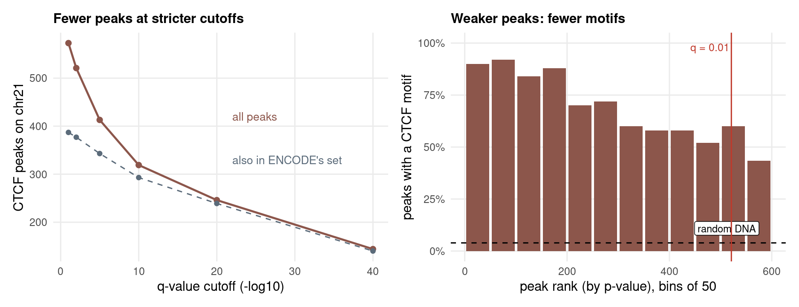
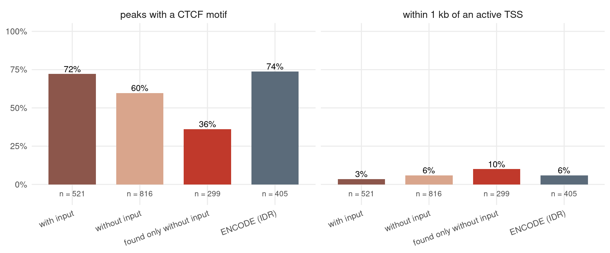
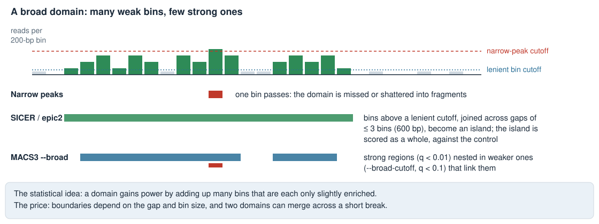
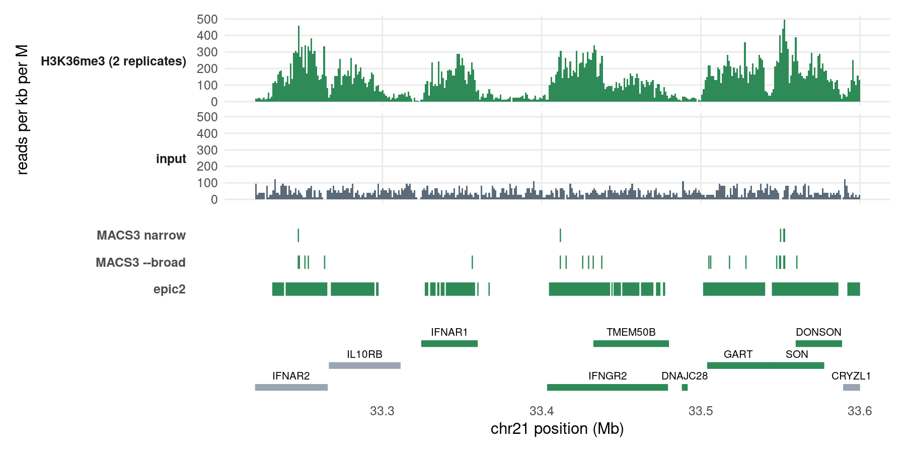
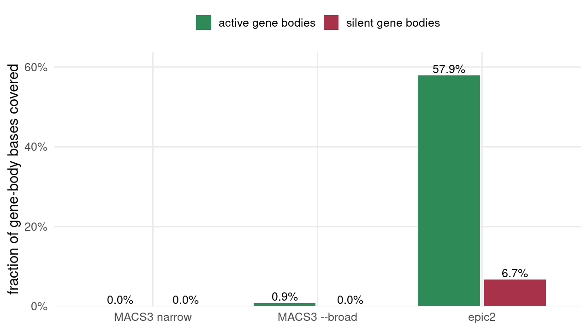
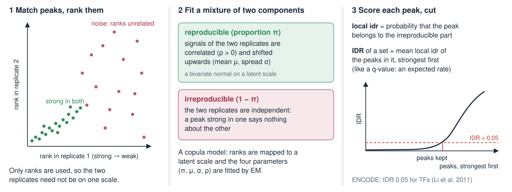
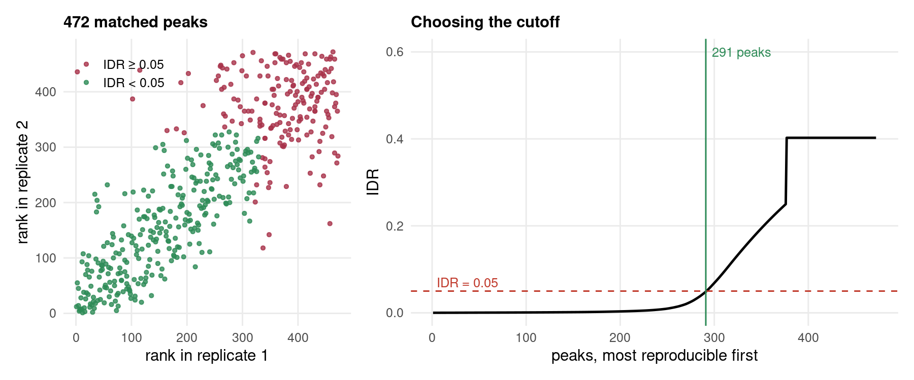
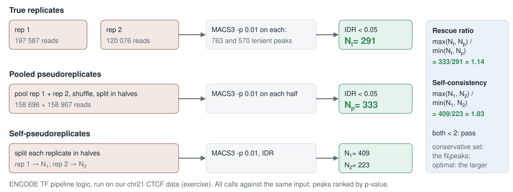
| choice | what goes wrong | do instead |
|---|---|---|
| no input, or another cell type’s input | peaks at open promoters, amplified regions, input pile-ups | input from the same chromatin, sequenced at least as deep |
| shallow input | noisy λ; single input reads decide | deeper input; MACS falls back to λBG and larger windows |
| narrow caller on a broad mark | few, fragmented peaks; domains missed | --broad, SICER/epic2, window counts; deeper sequencing |
| fragment model on a broad mark | arbitrary d | --nomodel --extsize, or paired-end reads |
| IDR on thresholded peaks | no noise component; the model fails | lenient calls (p < 0.01) as input |
wrong -g |
λBG off by orders of magnitude | effective size of the genome you aligned to |
--keep-dup and duplicates |
strong peaks flattened or PCR stacks called | remove duplicates once, then --keep-dup all (or MACS’s default 1 if not removed) |
| one cutoff for all samples | sample depth decides the peak number | compare samples in a common peak set (Annotation and differential binding) |
| tool | idea | typical use |
|---|---|---|
| MACS3 | local Poisson λ from input; narrow and --broad |
TFs, narrow marks; ATAC; the default |
| SPP | strand cross-correlation, windowed tag differences | ENCODE TF pipeline (older versions) |
| SICER / epic2 | windows joined into islands | broad histone marks |
HOMER findPeaks |
fixed-width peaks, local and input filters | TFs and marks, with motif tools |
| GEM, ChIP-exo callers | read-distribution model, motif-aware | high-resolution TF sites |
| SEACR | threshold on the background of near-empty data | CUT&RUN / CUT&Tag |
| ENCODE pipeline, nf-core/chipseq | alignment → filtering → MACS → IDR or replicated peaks → QC | production |
| step | key fact |
|---|---|
| fragment length | MACS pairs + and − strand peaks; d ≈ 100 bp for our CTCF; unstable for broad marks: set it |
| pileup | extended fragments over each base; the larger library is scaled to the smaller |
| local λ | \max(\lambda_\text{BG}, \lambda_d, \lambda_\text{1k}, \lambda_\text{10k}) from the input, each scaled to d |
| test | p = P(X \ge k), Poisson(λlocal); q-values by BH over bases; peaks = runs below the cutoff |
| thresholds | no natural cutoff; motif fraction falls with rank; use replicates to decide |
| input | removes open-chromatin, copy-number and pile-up artefacts; without it: more, less specific peaks |
| broad marks | pool windows (SICER/epic2, --broad); validate with biology |
| IDR | ranks only; mixture of reproducible and independent components; lenient input; IDR < 0.05 |
| ENCODE sets | Nt, Np, N1, N2; rescue and self-consistency ratios < 2 |
Not required reading and not examined. For those who want the primary literature.